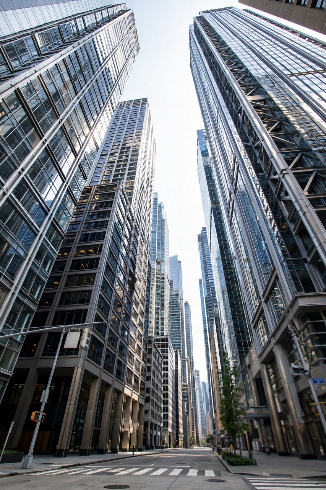

Skyscraper

A skyscraper is a tall, continuously habitable building, generally higher than 150 metres (500 ft). Historically the term applied to buildings of 10 to 20 storeys built in the 1880s; today it denotes much taller high-rise structures enabled by steel-frame construction and the safety elevator.
History
The first building widely regarded as a skyscraper is the Home Insurance Building in Chicago (1885), a ten-storey structure supported by a steel frame. Chicago and New York became the early centres of skyscraper construction, with steel skeleton frames, foundations suited to soft ground, and the elevator — made safe by Elisha Otis's safety brake in the 1850s — making tall buildings practical. New York's Empire State Building (1931) held the world height record for nearly 40 years.
Design and construction
Modern skyscrapers use a structural system — a rigid frame, shear walls, a central core, or a bundled tube (as in Chicago's Willis Tower) — designed to resist wind loads, which dominate design at great heights. High-strength concrete and steel, tuned mass dampers, and deep pile or caisson foundations are standard. Curtain walls of glass or metal panels hang from the frame rather than bearing load.
Tallest buildings
As of the mid-2020s the tallest building in the world is the Burj Khalifa in Dubai, at 828 metres (2,717 ft), completed in 2010. It is followed by Merdeka 118 in Kuala Lumpur (679 m) and the Shanghai Tower (632 m). Buildings over 600 m are sometimes termed "megatall"; those over 300 m "supertall".
Environmental and social aspects
Skyscrapers concentrate housing and offices on small land footprints but require substantial energy for vertical transport, cooling and construction materials. Their environmental performance depends heavily on design, occupancy and local energy sources.